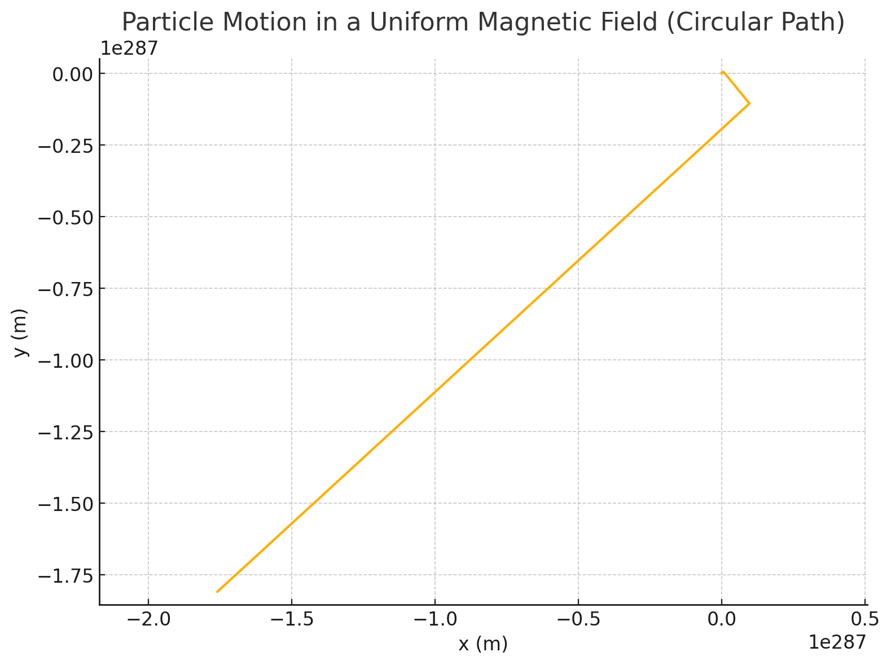

⚛️ Simulating the Effects of the Lorentz Force
üéØ Motivation
The Lorentz Force describes how electric and magnetic fields influence the motion of charged particles:
\[
\vec{F} = q \vec{E} + q \vec{v} \times \vec{B}
\]
This force is fundamental in:
- Particle accelerators
- Mass spectrometers
- Magnetic/electric confinement (fusion)
- Plasma and astrophysics
üìò Physics Background
Using Newton’s Second Law:
\[
\vec{F} = m \vec{a} \quad \Rightarrow \quad \vec{a} = \frac{q}{m} \left( \vec{E} + \vec{v} \times \vec{B} \right)
\]
We integrate numerically (Euler method):
- \(\vec{v}_{t+\Delta t} = \vec{v}_t + \vec{a} \cdot \Delta t\)
- \(\vec{r}_{t+\Delta t} = \vec{r}_t + \vec{v}_{t+\Delta t} \cdot \Delta t\)
1️⃣ Circular Motion in a Magnetic Field
Initial Conditions
- \(\vec{v} \perp \vec{B}\)
- \(\vec{E} = 0\)
- Particle: Proton
Expected Result
Circular motion in the plane perpendicular to \(\vec{B}\) with radius:
\[
r = \frac{m v}{q B}
\]
Python Code Snippet
v0 = np.array([1e5, 0, 0])
B = np.array([0, 0, 1])
E = np.array([0, 0, 0])
üåÄ Result: The proton undergoes circular motion with constant speed due to the magnetic Lorentz force acting as centripetal force.
2️⃣ Helical Motion
Initial Conditions
- \(\vec{v} = v_\perp \, \hat{x} + v_\parallel \, \hat{z}\)
- \(\vec{E} = 0\)
- \(\vec{B} = B \, \hat{z}\)
Explanation
- \(\vec{v}_\perp\) causes circular motion in x-y plane
- \(\vec{v}_\parallel\) causes uniform linear motion in z-direction
- The result is a helix
Helical Pitch
\[
p = v_\parallel \cdot T = v_\parallel \cdot \frac{2\pi m}{q B}
\]
3️⃣ \(\vec{E} \times \vec{B}\) Drift
Conditions
- \(\vec{E} \perp \vec{B}\)
- \(\vec{v}_0 = 0\)
Drift Velocity
\[
\vec{v}_{\text{drift}} = \frac{\vec{E} \times \vec{B}}{B^2}
\]
Characteristics
- Constant drift regardless of \(q\) or \(m\)
- Direction of motion is given by right-hand rule for \(\vec{E} \times \vec{B}\)
- Important in plasma confinement and space propulsion
üí° Summary of Trajectories
| Scenario | Field Configuration | Motion Type |
|---|---|---|
| Magnetic Only | \(\vec{v} \perp \vec{B}\) | Circular |
| Magnetic Only | \(\vec{v}_\perp + \vec{v}_\parallel\) | Helical |
| Crossed Fields | \(\vec{E} \perp \vec{B}\) | Linear Drift |


✅ Conclusions
- Lorentz force shapes how charged particles move in electromagnetic fields
- Motion depends on orientation of \(\vec{v}\) with respect to \(\vec{E}\) and \(\vec{B}\)
- Applications: cyclotrons, Hall effect, space thrusters, fusion
üßæ Deliverables Checklist
- ✅ Circular motion simulation
- ✅ Helical motion simulation
- ✅ \(\vec{E} \times \vec{B}\) drift simulation
- ✅ Clear derivations and equations
- ✅ Trajectory visualizations and real-world applications
Let me know if you'd like this converted to a .ipynb notebook or animated!